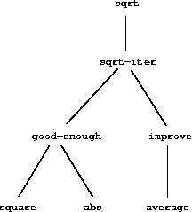

|
Uma linguagem de programação poderosa é mais do que apenas um meio para instruir um computador a executar tarefas. A linguagem também serve como uma estrutura na qual organizamos nossas ideias sobre processos. Assim, quando descrevemos uma linguagem, devemos prestar especial atenção aos meios que ela proporciona para combinar ideias simples para formar ideias mais complexas. Toda linguagem poderosa possui três mecanismos para fazer isso:
Na programação, lidamos com dois tipos de elementos: procedimentos e dados. (Mais tarde, descobriremos que eles realmente não são tão distintos). Informalmente, dados são “objetos” que queremos manipular e procedimentos são descrições das regras para manipular os dados. Assim, qualquer linguagem de programação poderosa deve ser capaz de descrever dados e procedimentos primitivos e deve ter métodos para combinar e abstrair procedimentos e dados.
Neste capítulo, trataremos apenas de dados numéricos, para que possamos focar nas regras para a criação de procedimentos.4 Nos próximos capítulos, veremos que essas mesmas regras nos permitem criar procedimentos para manipular dados compostos também.
Uma maneira fácil de começar a programar é examinar algumas interações típicas com um interpretador para o dialeto Scheme do Lisp. Imagine que você está sentado em um terminal de computador. Você digita uma expressão, e o interpretador responde exibindo o resultado da sua avaliação dessa expressão.
Um tipo de expressão primitiva que você pode digitar é um número. (Mais precisamente, a expressão que você digita consiste nos números que representam o número na base 10). Se você apresentar ao Lisp um número
486
o interpretador responderá imprimindo 5
486
Expressões representando números podem ser combinadas com uma expressão representando um procedimento primitivo (como + ou *) para formar uma expressão composta que represente a aplicação do procedimento a esses números. Por exemplo:
(+ 137 349)
486
(- 1000 334)
666
(* 5 99)
495
(/ 10 5)
2
(+ 2.7 10)
12.7
Expressões como essas, formadas delimitando uma lista de expressões entre parênteses, a fim de denotar uma aplicação de procedimento, que são chamadas combinações. O elemento mais à esquerda na lista é chamado de operador, e os outros elementos são chamados de operandos. O valor de uma combinação é obtido aplicando o procedimento especificado pelo operador aos argumentos que são os valores dos operandos.
A convenção de colocar o operador à esquerda dos operandos é conhecida como notação de prefixo, e pode ser um pouco confusa a princípio porque se afasta significativamente da convenção matemática habitual. A notação de prefixo possui várias vantagens, no entanto. Uma delas é que ele pode acomodar procedimentos que podem receber um número arbitrário de argumentos, como nos exemplos a seguir:
(+ 21 35 12 7)
75
(* 25 4 12)
1200
Nenhuma ambiguidade pode surgir, porque o operador é sempre o elemento mais à esquerda e toda a combinação é delimitada pelos parênteses.
Uma segunda vantagem da notação de prefixo é que ela se estende de maneira direta para permitir que combinações sejam aninhadas, ou seja, para ter combinações cujos elementos são elas próprias:
(+ (* 3 5) (- 10 6))
19
Não há limite (em princípio) à profundidade de tal aninhamento e à complexidade geral das expressões que o interpretador Lisp pode avaliar. Nós, humanos, ficamos confusos com expressões ainda relativamente simples, como
(+ (* 3 (+ (* 2 4) (+ 3 5))) (+ (- 10 7) 6))
que o interpretador avaliaria prontamente como sendo 57. Podemos nos ajudar escrevendo essa expressão na forma
(+ (* 3
(+ (* 2 4)
(+ 3 5)))
(+ (- 10 7)
6))
seguindo uma convenção de formatação conhecida como impressão elegante, na qual cada combinação longa é escrita para que os operandos sejam alinhados verticalmente. Os recuos resultantes exibem claramente a estrutura da expressão.6
Mesmo com expressões complexas, o interpretador sempre opera no mesmo ciclo básico: lê uma expressão do terminal, avalia a expressão e imprime o resultado. Esse modo de operação geralmente é expresso dizendo que o interpretador é executado em um loop de leitura, avaliação e impressão. Observe, em particular, que não é necessário instruir explicitamente o interpretador para imprimir o valor da expressão.7
Um aspecto crítico de uma linguagem de programação é o meio que ela fornece para usar nomes para se referir a objetos computacionais. Dizemos que o nome identifica uma variável cujo valor é o objeto.
No dialeto Scheme do Lisp, nomeamos os objetos com define. Digitando
(define size 2)
faz com que o interpretador associe o valor 2 ao nome size.8 Depois que o nome size foi associado ao número 2, podemos nos referir ao valor 2 pelo nome:
size
2
(* 5 size)
10
Aqui estão mais exemplos do uso de define:
(define pi 3.14159)
(define radius 10)
(* pi (* radius radius))
314.159
(define circumference (* 2 pi radius))
circumference
62.8318
Define é o meio mais simples de abstração da nossa linguagem, pois nos permite usar nomes simples para nos referir aos resultados de operações compostas, como a circumference calculada acima. Em geral, os objetos computacionais podem ter estruturas muito complexas, e seria extremamente inconveniente precisar lembrar e repetir seus detalhes sempre que desejá-los usá-los. De fato, programas complexos são construídos construindo, passo a passo, objetos computacionais de crescente complexidade. O interpretador torna essa construção do programa passo a passo particularmente conveniente porque as associações nome-objeto podem ser criadas gradualmente em interações sucessivas. Esse recurso incentiva o desenvolvimento e o teste incrementais de programas e é amplamente responsável pelo fato de que um programa Lisp geralmente consiste em um grande número de procedimentos relativamente simples.
Deve ficar claro que a possibilidade de associar valores a símbolos e depois recuperá-los significa que o interpretador deve manter algum tipo de memória que controla os pares nome-objeto. Essa memória é chamada de ambiente (mais precisamente o ambiente global, pois veremos mais adiante que uma computação pode envolver vários ambientes diferentes 9
Um dos nossos objetivos neste capítulo é isolar questões sobre o pensamento processual. Como exemplo, consideremos que, ao avaliar combinações, o próprio interpretador segue um procedimento.
1. Avalie as subexpressões da combinação.
2. Aplique o procedimento que é o valor da subexpressão mais à esquerda (o operador) nos argumentos que são os valores das outras subexpressões (os operandos).
Mesmo essa regra simples ilustra alguns pontos importantes sobre processos em geral. Primeiro, observe que o primeiro passo determina que, para realizar o processo de avaliação de uma combinação, devemos primeiro executar o processo de avaliação em cada elemento da combinação. Assim, a regra de avaliação é de recursiva; isto é, inclui, como uma de suas etapas, a necessidade de invocar a própria regra.10
Observe como sucintamente a ideia de recursão pode ser usada para expressar o que, no caso de uma combinação profundamente aninhada, seria visto como um processo bastante complicado. Por exemplo, avaliando
(* (+ 2 (* 4 6))
(+ 3 5 7))
requer que a regra de avaliação seja aplicada a quatro combinações diferentes. Podemos obter uma imagem desse processo representando a combinação na forma de uma árvore, como mostra a figura 1.1. Cada combinação é representada por um nó com ramificações correspondentes ao operador e os operandos da combinação decorrentes dele. Os nós do terminal (ou seja, nós sem ramificações decorrentes deles) representam operadores ou números. Vendo a avaliação em termos da árvore, podemos imaginar que os valores dos operandos movem para cima, começando pelos nós terminais e combinando em níveis cada vez mais altos. Em geral, veremos que a recursão é uma técnica muito poderosa para lidar com objetos hierárquicos e os semelhantes a árvores. De fato, a forma “mover valores para cima” da regra de avaliação é um exemplo de um tipo geral de processo conhecido como acumulação de árvore.
|
Em seguida, observe que a aplicação repetida da primeira etapa nos leva ao ponto em que precisamos avaliar, não combinações, mas expressões primitivas, como números, operadores internos ou outros nomes. Cuidamos dos casos primitivos, estipulando que
Podemos considerar a segunda regra como um caso especial da terceira, estipulando que símbolos como + e * também estão incluídos no ambiente global e estão associados às sequências de instruções da máquina que são seus "valores". O ponto principal a ser observado é o papel do ambiente na determinação do significado dos símbolos nas expressões. Em uma linguagem interativa como Lisp, não faz sentido falar do valor de uma expressão como (+ x 1) sem especificar nenhuma informação sobre o ambiente que possa fornecer um significado ao símbolo x (ou mesmo para o símbolo +). Como veremos no capítulo 3, a noção geral de ambiente como um contexto em que a avaliação ocorre desempenhará um papel importante em nossa compreensão da execução do programa.
Observe que a regra de avaliação fornecida acima não trata de definições. Por exemplo, avaliar (define x 3) não se aplica define para dois argumentos, um dos quais é o valor do símbolo x e o outro dos quais é 3, pois o objetivo de define é precisamente associar x a um valor. (Ou seja, (define x 3) não é uma combinação).
Tais exceções à regra geral de avaliação são chamadas formas especiais. Define é o único exemplo de uma forma especial que vimos até agora, mas encontraremos outras em breve. Cada forma especial possui sua própria regra de avaliação. Os vários tipos de expressões (cada um com sua regra de avaliação associada) constituem a sintaxe da linguagem de programação. Em comparação com a maioria das outras linguagens de programação, o Lisp possui uma sintaxe muito simples; isto é, a regra de avaliação para expressões pode ser descrita por uma regra geral simples, com regras especializadas para um pequeno número de formas especiais.11
Identificamos no Lisp alguns dos elementos que devem aparecer em qualquer linguagem de programação poderosa:
Agora aprenderemos sobre definições de procedimento, uma técnica de abstração muito mais poderosa pela qual uma operação composta pode receber um nome e ser chamada de unidade.
Começamos examinando como expressar a ideia de "elevar ao quadrado". Poderíamos dizer: "Para elevar algo ao quadrado, multiplique-o por si mesmo". Isso é expresso em nossa linguagem como
Podemos entender isso da seguinte maneira:
(define (square x) (* x x))
↑ ↑ ↑ ↑ ↑ ↑
Para elevar algo ao quadrado, multiplique-o por si só.
Temos aqui um procedimento composto, que recebeu o nome de square. O procedimento representa a operação de multiplicar algo por si só. O objeto a ser multiplicado recebe um nome local, x, que desempenha o mesmo papel que um pronome desempenha na linguagem natural. A avaliação da definição cria esse procedimento composto e o associa ao nome square.12
A forma geral de uma definição de procedimento é
(define (<name> <formal parameters>) <body>)
O <name> é um símbolo a ser associado à definição de procedimento no ambiente.13 O <formal parameters> são os nomes usados no corpo do procedimento para se referir aos argumentos correspondentes do procedimento. O <body> é uma expressão que produzirá o valor da aplicação de procedimento quando os parâmetros formais forem substituídos pelos argumentos reais aos quais o procedimento é aplicado. 14 O <name> e os <formal parameters> estão agrupados em parênteses, exatamente como seriam em uma chamada real para o procedimento que está será definido.
Tendo definido square, agora podemos usá-lo:
(square 21)
441
(square (+ 2 5))
49
(square (square 3))
81
Também podemos usar square como um componente básico na definição de outros procedimentos. Por exemplo, x2 + y2 pode ser expresso como
(+ (square x) (square y))
Podemos facilmente definir um procedimento sum-of-squares que, dados dois números como argumentos, produza a soma de seus quadrados:
(define (sum-of-squares x y)
(+ (square x) (square y)))
(sum-of-squares 3 4)
25
Agora podemos usar a sum-of-squares como um bloco de construção na construção de procedimentos adicionais:
(define (f a)
(sum-of-squares (+ a 1) (* a 2)))
(f 5)
136
Os procedimentos compostos são usados exatamente da mesma maneira que os procedimentos primitivos. De fato, não se poderia dizer, olhando para a definição de sum-of-squares dada acima, se square foi incorporado ao interpretador, como + e *, ou definido como um procedimento composto.
Para avaliar uma combinação cujo operador nomeia um procedimento composto, o interpretador segue o mesmo processo que para combinações cujos operadores nomeiam procedimentos primitivos, que descrevemos na seção 1.1.3. Ou seja, o interpretador avalia os elementos da combinação e aplica o procedimento (que é o valor do operador da combinação) aos argumentos (que são os valores dos operandos da combinação).
Podemos assumir que o mecanismo para aplicar procedimentos primitivos aos argumentos está embutido no interpretador. Para procedimentos compostos, o processo de aplicação é o seguinte:
Para ilustrar esse processo, avaliaremos a combinação
(f 5)
onde f é o procedimento definido na seção 1.1.4. Começamos recuperando o corpo de f:
(sum-of-squares (+ a 1) (* a 2))
Em seguida, substituímos o parâmetro formal a pelo argumento 5:
(sum-of-squares (+ 5 1) (* 5 2))
Assim, o problema se reduz à avaliação de uma combinação com dois operandos e um operador sum-of-squares. A avaliação dessa combinação envolve três subproblemas. Devemos avaliar o operador para obter o procedimento a ser aplicado e devemos avaliar os operandos para obter os argumentos. Agora (+ 5 1) produz 6 e (* 5 2) produz 10, portanto, devemos aplicar o procedimento sum-of-squares para 6 e 10. Esses valores são substituídos pelos parâmetros formais x e y no corpo da sum-of-squares, reduzindo a expressão para
(+ (square 6) (square 10))
Se usarmos a definição de square, isso reduz a
(+ (* 6 6) (* 10 10))
que reduz pela multiplicação para
(+ 36 100)
e finalmente para
136
O processo que acabamos de descrever é chamado de modelo de substituição para aplicação de procedimentos. Pode ser tomado como um modelo que determina o "significado" da aplicação do procedimento, no que diz respeito aos procedimentos deste capítulo. No entanto, há dois pontos que devem ser enfatizados:
De acordo com a descrição da avaliação fornecida na seção 1.1.3, o interpretador avalia primeiro o operador e os operandos e depois aplica o procedimento resultante aos argumentos resultantes. Esta não é a única maneira de realizar a avaliação. Um modelo de avaliação alternativo não avaliaria os operandos até que seus valores fossem necessários. Em vez disso, substituiria primeiro expressões de operando por parâmetros até obter uma expressão envolvendo apenas operadores primitivos e, em seguida, executaria a avaliação. Se usarmos esse método, a avaliação de
(f 5)
prosseguiria de acordo com a sequência de expansões
(sum-of-squares (+ 5 1) (* 5 2))
(+ (square (+ 5 1)) (square (* 5 2)) )
(+ (* (+ 5 1) (+ 5 1)) (* (* 5 2) (* 5 2)))
followed by the reductions
(+ (* 6 6) (* 10 10))
(+ 36 100)
136
Isso dá a mesma resposta que nosso modelo de avaliação anterior, mas o processo é diferente. Em particular, as avaliações de (+ 5 1) e (* 5 2) são realizadas aqui duas vezes, correspondendo à redução da expressão
(* x x)
com x substituído respectivamente por (+ 5 1) e (* 5 2).
Nessa alternativa “expandir e reduzir completamente”, o método de avaliação é conhecida como avaliação em ordem normal, em contraste com o método "avaliar os argumentos e depois aplicar" que o interpretador realmente usa, que é chamado de avaliação por ordem de aplicação. Pode-se mostrar que, para aplicações de procedimento que podem ser modelados usando substituição (incluindo todos os procedimentos dos dois primeiros capítulos deste livro) e que produzem valores legítimos, a avaliação da ordem normal e da ordem aplicativa produz o mesmo valor. (Veja o exercício 1.5 para obter uma instância de um valor "ilegítimo", em que a avaliação de ordem normal e de ordem aplicativa não fornece o mesmo resultado).
O Lisp usa avaliação de ordem de aplicação, em parte devido à eficiência adicional obtida ao evitar várias avaliações de expressões como as ilustradas com (+ 5 1) e (* 5 2) acima e, mais significativamente, porque a avaliação em ordem normal se torna muito mais complicada de lidar quando deixamos o campo de procedimentos que podem ser modelados por substituição. Por outro lado, a avaliação em ordem normal pode ser uma ferramenta extremamente valiosa e investigaremos algumas de suas implicações nos capítulos 3 e 4.16
O poder expressivo da classe de procedimentos que podemos definir neste momento é muito limitado, porque não temos como fazer testes e executar operações diferentes, dependendo do resultado de um teste. Por exemplo, não podemos definir um procedimento que calcule o valor absoluto de um número testando se o número é positivo, negativo ou zero e executando ações diferentes nos diferentes casos, de acordo com a regra

Essa construção é chamada de análise de caso, e existe uma forma especial no Lisp para anotar essa análise de caso. É chamado cond (que significa "condicional") e é usado da seguinte forma:
(define (abs x)
(cond ((> x 0) x)
((= x 0) 0)
((< x 0) (- x))))
A forma geral de uma expressão condicional é
(cond (<p1> <e1>)
(<p2> <e2>)
⋮
(<pn> <en>))
consistindo no símbolo cond seguido por pares de expressões entre parênteses (<p> <e>) chamado cláusulas. A primeira expressão em cada par é um predicate - ou seja, uma expressão cujo valor é interpretado como verdadeiro ou falso.17
Expressões condicionais são avaliadas da seguinte maneira. O predicado <p1> é avaliado primeiro. Se seu valor for falso, <p2> será avaliado. Se o valor de <p2> também for falso, o <p3> será avaliado. Esse processo continua até que seja encontrado um predicado cujo valor é verdadeiro; nesse caso, o interpretador retorna o valor da correspondente expressão consequente <e> da cláusula como o valor da expressão condicional. Se nenhum dos <p> for considerado verdadeiro, o valor do cond será indefinido.
A palavra predicate é usada para procedimentos que retornam verdadeiro ou falso, bem como para expressões que avaliam como verdadeiro ou falso. O procedimento de valor absoluto abs utiliza os predicados primitivos >, <, e =.18 Estes recebem dois números como argumentos e testam se o primeiro número é, respectivamente, maior que, menor que ou igual ao segundo número, retornando verdadeiro ou falso de acordo.
Outra maneira de escrever o procedimento de valor absoluto é
(define (abs x)
(cond ((< x 0) (- x))
(else x)))
que pode ser expresso em português como "Se x for menor que zero retorno - x; caso contrário, retorne x. " Else é um símbolo especial que pode ser usado no lugar de <p> na cláusula final de um cond. Isso faz com que o cond retorne como seu valor o valor dos correspondentes e> sempre que todas as cláusulas anteriores tiverem sido ignoradas. De fato, qualquer expressão que sempre avalie como um valor verdadeiro pode ser usada como <p> aqui.
Aqui está outra maneira de escrever o procedimento de valor absoluto:
(define (abs x)
(if (< x 0)
(- x)
x))
Isso usa o formato especial if, um tipo restrito de condicional que pode ser usado quando há precisamente dois casos na análise de caso. A forma geral de uma expressão if é
(if <predicate> <consequent> <alternative>)
Para avaliar uma expressão if, o interpretador começa avaliando a parte <predicate> da expressão. Se o <predicate> for avaliado como um valor verdadeiro, o interpretador avalia o <consequent> e retorna seu valor. Caso contrário, ele avalia a <alternative> e retorna seu valor.19
Além de predicados primitivos, como <, = e >, existem operações de composição lógica, que nos permitem construir predicados compostos. Os três mais usados são:
O interpretador avalia as expressões <e> uma de cada vez, na ordem da esquerda para a direita. Se algum <e> for avaliado como falso, o valor das expressões and será falso, e o restante dos <e> serão Não avaliado. Se todos os <e> forem avaliados como valores verdadeiros, o valor das expressões and será o valor do último.
O interpretador avalia as expressões <e> uma de cada vez, na ordem da esquerda para a direita. Se algum <e> for avaliado como um valor verdadeiro, esse valor será retornado como o valor da expressão or e o restante dos <e> não são avaliados. Se todos os <e> forem avaliados como false, o valor da expressão or será falso.
O valor de uma expressão not é verdadeiro quando a expressão <e> é avaliada como falsa e, caso contrário, falsa.
Observe que and e or são formas especiais, não procedimentos, porque as subexpressões não são necessariamente todas avaliadas. Not é um procedimento comum.
Como um exemplo de como eles são usados, a condição de um número x estar no intervalo 5 <x <10 pode ser expressa como
(and (> x 5) (< x 10))
Como outro exemplo, podemos definir um predicado para testar se um número é maior ou igual a outro como
(define (>= x y)
(or (> x y) (= x y)))
or alternatively as
(define (>= x y)
(not (< x y)))
Exercício 1.1. Abaixo está uma sequência de expressões. Qual é o resultado impresso pelo interpretador em resposta a cada expressão? Suponha que a sequência seja avaliada na ordem em que é apresentada.
10
(+ 5 3 4)
(- 9 1)
(/ 6 2)
(+ (* 2 4) (- 4 6))
(define a 3)
(define b (+ a 1))
(+ a b (* a b))
(= a b)
(if (and (> b a) (< b (* a b)))
b
a)
(cond ((= a 4) 6)
((= b 4) (+ 6 7 a))
(else 25))
(+ 2 (if (> b a) b a))
(* (cond ((> a b) a)
((< a b) b)
(else -1))
(+ a 1))
Exercício 1.2. Traduza a seguinte expressão no formato de prefixo

Exercício 1.3. Defina um procedimento que use três números como argumentos e retorne a soma dos quadrados dos dois números maiores.
Exercício 1.4. Observe que nosso modelo de avaliação permite combinações cujos operadores são expressões compostas. Use esta observação para descrever o comportamento do seguinte procedimento:
(define (a-plus-abs-b a b)
((if (> b 0) + -) a b))
Exercício 1.5. Ben Bitdiddle inventou um teste para determinar se o interpretador com o qual ele se depara usa a avaliação de ordem aplicativa ou avaliação de ordem normal. Ele define os dois procedimentos a seguir:
(define (p) (p))
(define (test x y)
(if (= x 0)
0
y))
Então ele avalia a expressão
(test 0 (p))
Que comportamento Ben observará com um interpretador que use avaliação de ordem de aplicação? Que comportamento ele observará com um interpretador que use avaliação de ordem normal? Explique sua resposta. (Suponha que a regra de avaliação para a forma especial if seja a mesma, independentemente de o interpretador usar ordem normal ou aplicativa: A expressão do predicado é avaliada primeiro e o resultado determina avaliar a expressão consequente ou a alternativa).
Os procedimentos, como apresentados acima, são muito parecidos com funções matemáticas comuns. Eles especificam um valor que é determinado por um ou mais parâmetros. Mas há uma diferença importante entre funções matemáticas e procedimentos de computador. Os procedimentos devem ser eficazes.
Como exemplo, considere o problema de calcular raízes quadradas. Podemos definir a função de raiz quadrada como

Isso descreve uma função matemática perfeitamente legítima. Poderíamos usá-lo para reconhecer se um número é a raiz quadrada de outro ou para derivar fatos sobre raízes quadradas em geral. Por outro lado, a definição não descreve um procedimento. De fato, ele nos diz quase nada sobre como encontrar a raiz quadrada de um determinado número. Não ajudará a reformular esta definição no pseudo-Lisp:
(define (sqrt x)
(the y (and (>= y 0)
(= (square y) x))))
Isso apenas levanta a questão.
O contraste entre função e procedimento é um reflexo da distinção geral entre descrever propriedades dos objetos e descrever como os fazer, ou, como às vezes é referido, a distinção entre conhecimento declarativo e conhecimento imperativo. Na matemática, geralmente nos preocupamos com descrições declarativas (o que é), enquanto na ciência da computação geralmente nos preocupamos com descrições imperativas (como).20
Como alguém calcula raízes quadradas? A maneira mais comum é usar o método de aproximações sucessivas de Newton, que diz que sempre que adivinhamos y o valor da raiz quadrada de um número x, podemos execute uma manipulação simples para obter uma estimativa melhor (uma mais próxima da raiz quadrada real) calculando a média de y com x/y.21 Por exemplo, podemos calcular a raiz quadrada de 2 da seguinte maneira. Suponha que nosso palpite inicial seja 1:
| Palpite | Quociente | Média |
| 1 | (2/1) = 2 | ((2 + 1)/2) = 1.5 |
| 1.5 | (2/1.5) = 1.3333 | ((1.3333 + 1.5)/2) = 1.4167 |
| 1.4167 | (2/1.4167) = 1.4118 | ((1.4167 + 1.4118)/2) = 1.4142 |
| 1.4142 | ... | ... |
Continuando esse processo, obtemos melhores e melhores aproximações à raiz quadrada.
Agora formalizaremos o processo em termos de procedimentos. Começamos com um valor para o radicando (o número cuja raiz quadrada tentamos calcular) e um valor para o palpite. Se o palpite é bom o suficiente para nossos propósitos, estamos prontos; caso contrário, devemos repetir o processo com um palpite aprimorado. Escrevemos esta estratégia básica como um procedimento:
(define (sqrt-iter guess x)
(if (good-enough? guess x)
guess
(sqrt-iter (improve guess x)
x)))
Um palpite é aprimorado com a média do quociente do radicando e do palpite antigo:
(define (improve guess x)
(average guess (/ x guess)))
where
(define (average x y)
(/ (+ x y) 2))
Também temos que dizer o que queremos dizer com "bom o suficiente". O que se segue serve de ilustração, mas não é realmente um teste muito bom. (Veja o exercício 1.7). A ideia é melhorar a resposta até que ela esteja próxima o suficiente para que seu quadrado seja diferente do radicando em menos de uma tolerância predeterminada (aqui 0,001):22
(define (good-enough? guess x)
(< (abs (- (square guess) x)) 0.001))
Finalmente, precisamos de uma maneira de começar. Por exemplo, sempre podemos adivinhar que a raiz quadrada de qualquer número é 1:23
(define (sqrt x)
(sqrt-iter 1.0 x))
Se digitarmos essas definições para o interpretador, poderemos usar sqrt da mesma maneira que podemos usar qualquer procedimento:
(sqrt 9)
3.00009155413138
(sqrt (+ 100 37))
11.704699917758145
(sqrt (+ (sqrt 2) (sqrt 3)))
1.7739279023207892
(square (sqrt 1000))
1000.000369924366
O programa sqrt também ilustra que a linguagem processual simples que introduzimos até agora é suficiente para escrever qualquer programa puramente numérico em que alguém possa escrever, por exemplo, C ou Pascal. Isso pode parecer surpreendente, uma vez que não incluímos em nossa linguagem nenhuma construção iterativa (loop) que direciona o computador a fazer algo repetidamente. Sqrt-iter, por outro lado, demonstra como a iteração pode ser realizada usando nenhuma construção especial além da capacidade comum de chamar um procedimento.24
Exercício 1.6. Alyssa P. Hacker não vê por que if precisa ser fornecido como uma forma especial. "Por que não posso defini-lo como um procedimento comum em termos de cond?" ela pergunta. A amiga de Alyssa, Eva Lu Ator, afirma que isso pode realmente ser feito, e ela define uma nova versão de if:
(define (new-if predicate then-clause else-clause)
(cond (predicate then-clause)
(else else-clause)))
Eva demonstra o programa para Alyssa:
(new-if (= 2 3) 0 5)
5
(new-if (= 1 1) 0 5)
0
Encantado, o Alyssa usa new-if para reescrever o programa de raiz quadrada:
(define (sqrt-iter guess x)
(new-if (good-enough? guess x)
guess
(sqrt-iter (improve guess x)
x)))
O que acontece quando Alyssa tenta usar isso para calcular raízes quadradas? Explique.
Exercício 1.7. O teste good-enough? usado na computação de raízes quadradas não será muito eficaz para encontrar as raízes quadradas de números muito pequenos. Além disso, em computadores reais, as operações aritméticas são quase sempre executadas com precisão limitada. Isso torna nosso teste inadequado para números muito grandes. Explique essas instruções, com exemplos mostrando como o teste falha em números pequenos e grandes. Uma estratégia alternativa para implementar o good-enough? é observar como o guess muda de uma iteração para a seguinte e parar quando a mudança é uma fração muito pequena do palpite. Crie um procedimento de raiz quadrada que use esse tipo de teste final. Isso funciona melhor para números pequenos e grandes?
Exercício 1.8. O método de Newton para raízes de cubos é baseado no fato de que se y é uma aproximação à raiz do cubo de x, então uma melhor aproximação é dada pelo valor

Use esta fórmula para implementar um procedimento de raiz de cubo análogo ao procedimento de raiz quadrada. (Na seção 1.3.4, veremos como implementar o método de Newton em geral como uma abstração desses procedimentos de raiz quadrada e raiz cúbica).
Sqrt é o nosso primeiro exemplo de processo definido por um conjunto de procedimentos definidos mutuamente. Observe que a definição de sqrt-iter é recursiva; isto é, o procedimento é definido em termos de si mesmo. A ideia de poder definir um procedimento em termos de si mesma pode ser perturbadora; pode parecer pouco claro como tal definição "circular" poderia fazer sentido, muito menos especificar um processo bem definido a ser executado por um computador. Isso será tratado com mais cuidado na seção 1.2. Mas primeiro consideraremos alguns outros pontos importantes ilustrados pelo exemplo do sqrt.
Observe que o problema de calcular raízes quadradas se divide naturalmente em vários subproblemas: como saber se um palpite é bom o suficiente, como melhorar um palpite e assim por diante. Cada uma dessas tarefas é realizada por um procedimento separado. Todo o programa sqrt pode ser visto como um cluster de procedimentos (mostrado na figura 1.2) que reflete a decomposição do problema em subproblemas.
|  |
A importância dessa estratégia de decomposição não é simplesmente dividir o programa em partes. Afinal, poderíamos pegar qualquer programa grande e dividi-lo em partes - as dez primeiras linhas, as próximas dez linhas, as próximas dez linhas e assim por diante. Em vez disso, é crucial que cada procedimento realize uma tarefa identificável que possa ser usada como um módulo na definição de outros procedimentos. Por exemplo, quando definimos o procedimento good-enough? em termos de square, podemos considerar o procedimento square como uma "caixa preta". Nesse momento, não estamos preocupados com como o procedimento calcula seu resultado, apenas com o fato de que ele calcula o quadrado. Os detalhes de como o quadrado é calculado podem ser suprimidos, para serem considerados posteriormente. De fato, no que diz respeito ao procedimento good-enough?, square não é um procedimento, mas uma abstração de um procedimento, o então chamado abstração processual. Nesse nível de abstração, qualquer procedimento que calcule o quadrado é igualmente bom.
Assim, considerando apenas os valores retornados, os dois procedimentos a seguir para elevar um número ao quadrado devem ser indistinguíveis. Cada um recebe um argumento numérico e produz o quadrado desse número como valor.25
(define (square x) (* x x))
(define (square x)
(exp (double (log x))))
(define (double x) (+ x x))
Portanto, uma definição de procedimento deve poder suprimir detalhes. Os usuários do procedimento podem não ter escrito o procedimento, mas podem ter obtido de outro programador como uma caixa preta. Um usuário não precisa saber como o procedimento é implementado para usá-lo.
Um detalhe da implementação de um procedimento que não deve importar para o usuário do procedimento é a escolha dos nomes do implementador para os parâmetros formais do procedimento. Portanto, os seguintes procedimentos não devem ser distinguíveis:
(define (square x) (* x x))
(define (square y) (* y y))
Esse princípio - que o significado de um procedimento deve ser independente dos nomes de parâmetros usados por seu autor - parece superficialmente evidente, mas suas consequências são profundas. A consequência mais simples é que os nomes de parâmetros de um procedimento devem ser locais para o corpo do procedimento. Por exemplo, usamos square na definição de good-enough? em nosso procedimento de raiz quadrada:
(define (good-enough? guess x)
(< (abs (- (square guess) x)) 0.001))
A intenção do autor de good-enough? é determinar se o quadrado do primeiro argumento está dentro de uma determinada tolerância do segundo argumento. Vimos que o autor de good-enough? usou o nome guess para se referir ao primeiro argumento e x para se referir ao segundo argumento. O argumento do square é guess. Se o autor do square usou x (como acima) para se referir a esse argumento, veremos que o x em good-enough? deve ser um x diferente de square. A execução do procedimento square não deve afetar o valor de x usado por good-enough?, porque esse valor de x pode ser necessário para good-enough? depois que square terminou de ser computado.
Se os parâmetros não fossem locais para os corpos de seus respectivos procedimentos, o parâmetro x no square poderia ser confundido com o parâmetro x em good-enough?, e o comportamento de good-enough? dependeria de qual versão do square usamos. Portanto, square não seria a caixa preta que desejamos.
Um parâmetro formal de um procedimento possui um papel muito especial na definição do procedimento, pois não importa qual nome o parâmetro formal tenha. Esse nome é chamado de variável ligada, e dizemos que a definição de procedimento liga seus parâmetros formais. O significado de uma definição de procedimento permanece inalterado se uma variável ligada for renomeada de forma consistente em toda a definição.26 Se uma variável não estiver ligada, dizemos que ela é livre. O conjunto de expressões para as quais uma ligação define um nome é chamado de escopo desse nome. Em uma definição de procedimento, as variáveis associadas declaradas como os parâmetros formais do procedimento têm o corpo do procedimento como seu escopo.
Na definição de good-enough? acima, guess e x são variáveis ligadas, mas <, -, abs, e square são livres. O significado de good-enough? deve ser independente dos nomes que escolhemos para guess e x desde que sejam distintos e diferentes de <, -, abs, e square. (Se renomeamos guess para abs, teríamos introduzido um erro capturando a variável abs. No entanto, o significado de good-enough? não é independente dos nomes de suas variáveis livres. Certamente depende do fato (externo a esta definição) de que o símbolo abs nomeie um procedimento para calcular o valor absoluto de um número. Good-enough? calculará uma função diferente se substituirmos cos por abs em sua definição.
Até agora, temos um tipo de isolamento de nome disponível: os parâmetros formais de um procedimento são locais no corpo do procedimento. O programa de raiz quadrada ilustra outra maneira pela qual gostaríamos de controlar o uso de nomes. O programa existente consiste em procedimentos separados:
(define (sqrt x)
(sqrt-iter 1.0 x))
(define (sqrt-iter guess x)
(if (good-enough? guess x)
guess
(sqrt-iter (improve guess x) x)))
(define (good-enough? guess x)
(< (abs (- (square guess) x)) 0.001))
(define (improve guess x)
(average guess (/ x guess)))
O problema com este programa é que o único procedimento importante para os usuários do sqrt é o sqrt. Os outros procedimentos (sqrt-iter, good-enough?, e improve) apenas confundem suas mentes. Eles não podem definir nenhum outro procedimento chamado good-enough? como parte de outro programa para trabalhar em conjunto com o programa de raiz quadrada, porque o sqrt precisa dele. O problema é especialmente grave na construção de grandes sistemas por muitos programadores isolados. Por exemplo, na construção de uma grande biblioteca de procedimentos numéricos, muitas funções numéricas são computadas como aproximações sucessivas e, portanto, podem ter procedimentos denominados good-enough? e improve como procedimentos auxiliares. Gostaríamos de localizar os subprocedimentos, ocultando-os dentro do sqrt para que o sqrt pudesse coexistir com outras aproximações sucessivas, cada uma com seu próprio procedimento privado good-enough?. Para tornar isso possível, permitimos que um procedimento tenha definições internas que são locais para esse procedimento. Por exemplo, no problema da raiz quadrada, podemos escrever
(define (sqrt x)
(define (good-enough? guess x)
(< (abs (- (square guess) x)) 0.001))
(define (improve guess x)
(average guess (/ x guess)))
(define (sqrt-iter guess x)
(if (good-enough? guess x)
guess
(sqrt-iter (improve guess x) x)))
(sqrt-iter 1.0 x))
Esse aninhamento de definições, chamado estrutura de blocos, é basicamente a solução certa para o problema mais simples de empacotamento de nomes. Mas há uma ideia melhor à espreita aqui. Além de internalizar as definições dos procedimentos auxiliares, podemos simplificá-las. Como x está ligado na definição de sqrt, os procedimentos good-enough?, improve, e sqrt-iter, que são definidos internamente como sqrt, estão no escopo de x. Portanto, não é necessário passar x explicitamente para cada um desses procedimentos. Em vez disso, permitimos que x seja uma variável livre nas definições internas, como mostrado abaixo. Então x obtém seu valor a partir do argumento com o qual o procedimento de fechamento sqrt é chamado. Essa disciplina é chamada de escopo lexical.27
(define (sqrt x)
(define (good-enough? guess)
(< (abs (- (square guess) x)) 0.001))
(define (improve guess)
(average guess (/ x guess)))
(define (sqrt-iter guess)
(if (good-enough? guess)
guess
(sqrt-iter (improve guess))))
(sqrt-iter 1.0))
Usaremos a estrutura de blocos extensivamente para nos ajudar a dividir grandes programas em partes tratáveis.28 A ideia de estrutura de blocos se originou na linguagem de programação Algol 60. Ela aparece nas linguagens de programação mais avançadas e é uma ferramenta importante para ajudar a organizar a construção de grandes programas.
4 A caracterização de números como "dados simples" é um blefe descalço. De fato, o tratamento de números é um dos aspectos mais complicados e confusos de qualquer linguagem de programação. Alguns problemas típicos envolvidos são os seguintes: Alguns sistemas de computador distinguem números inteiros, como 2, de números reais, como 2,71. O número real 2,00 é diferente do número inteiro 2? As operações aritméticas usadas para números inteiros são iguais às operações usadas para números reais? 6 dividido por 2 produz 3 ou 3,0? Quão largo o número que podemos representar? Quantas casas decimais de precisão podemos representar? O intervalo de números inteiros é igual ao intervalo de números reais? Acima e além dessas perguntas, é claro, existe uma coleção de questões relacionadas a erros de arredondamento e truncamento - toda a ciência da análise numérica. Como nosso foco neste livro é o projeto de programas em larga escala e não as técnicas numéricas, ignoraremos esses problemas. Os exemplos numéricos deste capítulo exibirão o comportamento usual de arredondamento que se observa ao usar operações aritméticas que preservam um número limitado de casas decimais de precisão em operações não-integrais.
5 Ao longo deste livro, quando desejamos enfatizar a distinção entre a entrada digitada pelo usuário e a resposta impressa pelo interpretador, mostraremos o último em caracteres inclinados.
6 Os sistemas Lisp normalmente fornecem recursos para ajudar o usuário na formatação de expressões. Dois recursos especialmente úteis são um que recua automaticamente para a posição de impressão bonita adequada sempre que uma nova linha é iniciada e outro que destaca o parêntese esquerdo correspondente sempre que um parêntese direito é digitado.
7 Lisp obedece à convenção de que toda expressão possui um valor. Essa convenção, com a antiga reputação do Lisp como uma linguagem ineficiente, é a fonte da piada de Alan Perlis (parafraseando Oscar Wilde) de que “os programadores do Lisp sabem o valor de tudo, menos o custo de nada”.
8 Neste livro, não mostramos a resposta do interpretador na avaliação de definições, pois é uma implementação altamente dependente.
9 O capítulo 3 mostrará que essa noção de ambiente é crucial, tanto para entender como o interpretador funciona quanto para implementar interpretadores.
10 Pode parecer estranho que a regra de avaliação diga, como parte da primeira etapa, que devemos avaliar o elemento mais à esquerda de uma combinação, já que, nesse ponto, só pode ser um operador como + ou * representando um procedimento primitivo interno, como adição ou multiplicação. Veremos mais adiante que é útil poder trabalhar com combinações cujos operadores são eles mesmos expressões compostas.
11 Formas sintáticas especiais que são simplesmente estruturas de superfície alternativas para objetos que podem ser escritas de maneiras mais uniformes são às vezes chamadas de açúcar sintático, para usar uma frase cunhada por Peter Landin. Em comparação com usuários de outras linguagens, os programadores Lisp, por regra, estão menos preocupados com questões de sintaxe. (Por outro lado, examine qualquer manual do Pascal e observe quanto dele é dedicado às descrições de sintaxe). Esse desdém pela sintaxe se deve em parte à flexibilidade do Lisp, que facilita a alteração da sintaxe da superfície e em parte à observação de que muitas construções sintáticas “convenientes”, que tornam a linguagem menos uniforme, acabam causando mais problemas do que valem quando os programas se tornam grandes e complexos. Nas palavras de Alan Perlis, "o açúcar sintático causa câncer de ponto e vírgula".
12 Observe que há duas operações diferentes sendo combinadas aqui: criamos o procedimento e dando o nome de square. É possível, de fato importante, poder separar essas duas noções - criar procedimentos sem nomeá-las e dar nomes aos procedimentos que já foram criados. Veremos como fazer isso na seção 1.3.2.
13 Ao longo deste livro, descreveremos a sintaxe geral das expressões usando símbolos em itálico delimitados por colchetes angulares - por exemplo, <nome> - para indicar os "espaços" na expressão a ser preenchida quando essa expressão for realmente usada.
14 Mais geralmente, o corpo do procedimento pode ser uma sequência de expressões. Nesse caso, o interpretador avalia cada expressão na sequência e retorna o valor da expressão final como o valor da aplicação de procedimento.
15 Apesar da simplicidade da ideia de substituição, acaba sendo surpreendentemente complicado fornecer uma definição matemática rigorosa do processo de substituição. O problema surge da possibilidade de confusão entre os nomes usados para os parâmetros formais de um procedimento e os nomes (possivelmente idênticos) usados nas expressões às quais o procedimento pode ser aplicado. De fato, há uma longa história de definições errôneas de substituição na literatura de lógica e semântica de programação. Veja Stoy 1977 para uma discussão cuidadosa da substituição.
16 No capítulo 3, apresentaremos processamento de fluxo, que é uma maneira de lidar com estruturas de dados aparentemente "infinitas" incorporando uma forma limitada de avaliação de ordem normal. Na seção 4.2, modificaremos o interpretador Scheme para produzir uma variante de ordem normal do Scheme.
17 "Interpretado como verdadeiro ou falso" significa o seguinte: No Scheme, existem dois valores distintos que são indicados pelas constantes #t e #f. Quando o interpretador verifica o valor de um predicado, ele interpreta #f como falso. Qualquer outro valor é tratado como verdadeiro. (Portanto, fornecer #t é logicamente desnecessário, mas é conveniente). Neste livro, usaremos os nomes true e false, que são associados aos valores #t e #f, respectivamente.
18 Abs também usa o operador "menos" -, que, quando usado com um único operando, como em (- x), indica negação.
19 Uma pequena diferença entre if e cond é que a parte <e> de cada cláusula cond pode ser uma sequência de expressões. Se o <p> correspondente for considerado verdadeiro, as expressões <e> serão avaliadas em sequência e o valor da expressão final na sequência será retornado como o valor do cond. Em uma expressão if, no entanto, a <consequent> e a <alternative> devem ser expressões únicas.
20 Descrições declarativas e imperativas estão intimamente relacionadas, assim como a matemática e a ciência da computação. Por exemplo, dizer que a resposta produzida por um programa é "correta" é fazer uma declaração declarativa sobre o programa. Existe uma grande quantidade de pesquisas destinadas a estabelecer técnicas para provar que os programas estão corretos, e grande parte da dificuldade técnica desse assunto está relacionada à negociação da transição entre declarações imperativas (a partir da qual os programas são construídos) e declarativas. instruções (que podem ser usadas para deduzir). De maneira semelhante, uma área atual importante no projeto da linguagem de programação é a exploração das chamadas linguagens de alto nível, nas quais na verdade se programa em termos de afirmações declarativas. A ideia é tornar os interpretadores sofisticados o suficiente para que, dado o conhecimento "o que é" especificado pelo programador, eles possam gerar automaticamente o conhecimento de "como fazer". Isso não pode ser feito em geral, mas há áreas importantes em que houve progresso. Revisitaremos essa ideia no capítulo 4.
21 Esse algoritmo de raiz quadrada é realmente um caso especial do método de Newton, que é uma técnica geral para encontrar raízes de equações. O próprio algoritmo de raiz quadrada foi desenvolvido por Heron de Alexandria no primeiro século A. D. Veremos como expressar o método geral de Newton como um procedimento Lisp na seção 1.3.4.
22 Normalmente, forneceremos nomes de predicados que terminam com pontos de interrogação, para que ajude-nos a lembrar que eles são predicados. Esta é apenas uma convenção estilística. Para o interpretador, o ponto de interrogação é apenas um caractere comum.
23 Observe que expressamos nosso palpite inicial como 1,0 em vez de 1. Isso não faria nenhuma diferença em muitas implementações do Lisp. MIT Scheme, no entanto, distingue entre números inteiros exatos e valores decimais, e a divisão de dois números inteiros produz um número racional em vez de um decimal. Por exemplo, dividir 10 por 6 gera 5/3, enquanto dividir 10,0 por 6,0 gera 1,6666666666666667. (Aprenderemos como implementar aritmética em números racionais na seção 2.1.1). Se começarmos com um palpite inicial de 1 em nosso programa de raiz quadrada e x é um número inteiro exato, todos os valores subsequentes produzidos no cálculo da raiz quadrada serão números racionais, em vez de decimais. Operações mistas em números racionais e decimais sempre produzem números decimais, portanto, começar com uma estimativa inicial de 1,0 força todos os valores subsequentes a serem decimais.
24 Os leitores preocupados com os problemas de eficiência envolvidos no uso de chamadas de procedimento para implementar a iteração devem observar as observações sobre "recursão de cauda" na seção 1.2.1.
25 Ainda não está claro qual desses procedimentos é uma implementação mais eficiente. Isso depende do hardware disponível. Existem máquinas para as quais a implementação "óbvia" é a menos eficiente. Considere uma máquina que possui extensas tabelas de logaritmos e antilogaritmos armazenados de maneira muito eficiente.
26 O conceito de renomeação consistente é realmente sutil e difícil de definir formalmente. Lógicos famosos cometeram erros embaraçosos aqui.
27 O escopo lexical dita que variáveis livres em um procedimento sejam usadas para se referir a ligações feitas por definições de procedimento anexadas; isto é, eles são pesquisados no ambiente em que o procedimento foi definido. Veremos como isso funciona em detalhes no capítulo 3, quando estudarmos os ambientes e o comportamento detalhado do interpretador.
28 As definições incorporadas devem vir em primeiro lugar no corpo de um procedimento. O gerenciamento não é responsável pelas consequências da execução de programas que entrelaçam definição e uso.